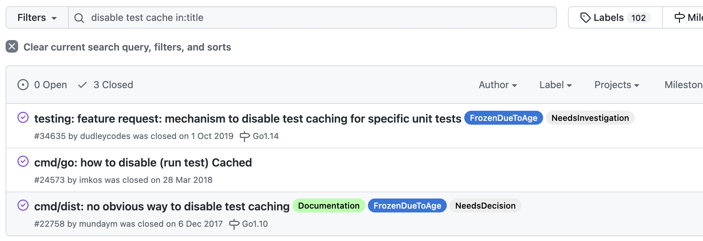

go test 如何禁用缓存？
大家好，我是 polarisxu。
每次执行单元测试，如果代码没有任何变动（包括可能读取的配置文件），则后续的执行，会直接读取缓存中的测试结果，同时会有一个 cached 标记。
$ go test -run ^TestPrint$ test/hello
ok test/hello 0.113s
$ go test -run ^TestPrint$ test/hello
ok test/hello (cached)
有时候可能希望能执行实际的测试，比如看日志输出，想要禁用缓存，怎么办？
碰到这样的问题，你一般会怎么获得答案？
本文介绍几种方法，对你解决其他问题可能也会有帮助。
1、查看 go test 的帮助文档
$ go help testflag
文档内容很多，初步浏览，似乎没有这样的 flag。实际上有这么一段话：
When 'go test' runs in package list mode, 'go test' caches successful
package test results to avoid unnecessary repeated running of tests. To
disable test caching, use any test flag or argument other than the
cacheable flags. The idiomatic way to disable test caching explicitly
is to use -count=1.
也就是说加上 -count=1 即可以禁用缓存。
2、在 go 官方仓库的 issue 中搜索

小提示：因为 issue 比较多，可以考虑加上 in:title 限定只在标题中搜索
其中 https://github.com/golang/go/issues/24573 里面有人提到，在 Go1.10 及以前通过 GOCACHE=off go test 禁用，Go1.11 及以上版本使用 -count=1 flag 禁用。因为 Go1.11 开始，GOCACHE=off 会影响 go.mod。
同时，在这个 issue 中，还有人提到 VSCode 中如何配置，即加上如下配置：
"go.testFlags": ["-count=1"]
3、百度或谷歌搜索
这是很多人可能会用的方案，当然，还包括在 StackOverflow、golang-nuts 邮件组上搜索。
学到了一个知识点，是不是还学到了如何找问题的答案？！授人以渔很重要。